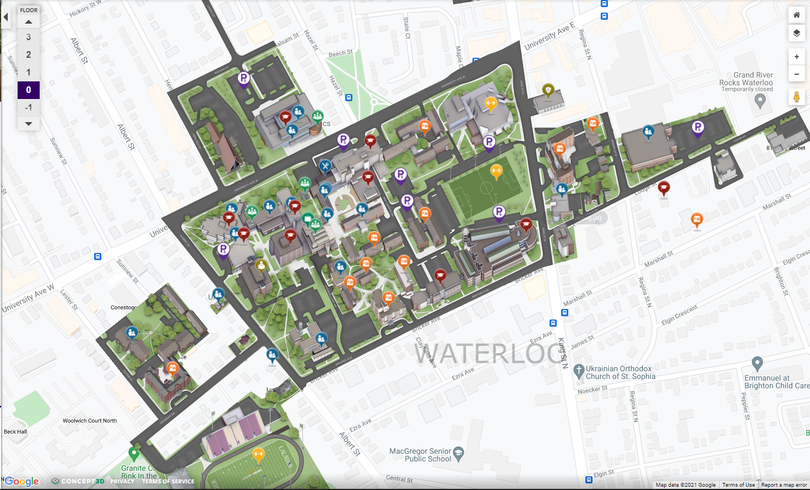

Wilfird Laurier Map
Indoor Building Map for Wilfrid Laurier University Waterloo Campus
Our Team
Sonya Shuster
GIS Specialist
Kendrick Lok
GIS Specialist
GIS Specialist
The Problem
Wilfrid Laurier requires an indoor building map application for the campus Our team will be exploring various platforms to build an indoor building map. The application must offer the functionality required which are an indoor tracking capability, lowest time to build, and intuitivity/ interactivity.
Here is the the Problem Statement:
- Ideal: Visitors arriving in the Arts Building at Wilfrid Laurier building knowing their whereabouts and can make an educated decision for themselves about how to get to where they need to go.
- Reality : Not all visitors are familiar with the building and map service/directory may be insufficient and has low accessibility.
- Consequences:Visitors may be lost and not able to reach their destination efficiently.
- Proposal: Develop a online indoor map directory of the Arts Building that shows the layout of each floor and all of the rooms on that floor.
Introduction
It is challenging to find a way to your destination at Wilfrid Laurier University (WLU)'s Waterloo campus. The locations of buildings are often unclear, some entrances and exits might be very well hidden and some buildings simply do not have an entrance directly into that building. Even the directions inside a building could be confusing due to insufficient of directory signs and indoor maps. A clear indoor map that could be accessed anytime and anywhere would be a helpful solution for this problem. The purpose of this project is experimenting various Esri products to evaluate their performance and suitability as a indoor map implementation for visitors to the campus. The WLU Arts Building is used as the example of test subject in this project.
Software Evaluated
Our team has chosen the following Esri application that may be the best fit for the project purpose: :
- Experience Builder

- ArcGIS Field Map
- ArcGIS Workforce
Detailed evaluations are listed in sections below.
Experience Builder
Click here to view our Experience Builder project.
ArcGIS Experience Builder empowers you to quickly that transform your data into web application without writing a single line of code. Experience Builder allows users to customize different interactive features for visuallizing data, such as querying data, viewing table, charts and more with drag-and-drop widgets. Click here to learn more about Experience Builder.
The following steps is how to create a Experience Builder with your data:
1. Share your data of interest as Hosted Feature Layers to ArcGIS Online. In this project case, it would be 1st, 2nd, 3rd floor and entrances or exits of the WLU Arts Building.
2. Create a web map with the uploaded data in ArcGIS online. Make neccessary edits such as modifying symbology, creating labels and configuring pop-up messages.
3. Create a new Experience Builder project and choose a visualizing template that fits your project.
4. Drag and drop the Map widget into the canvas to show your webmap created in previous steps, insert other neccessary widgets such as Query, Legend, Table and more to customize your web app.
5. Publish to the web when it is ready.
Criteria
As we ventured into Experience Builder, we tried to indivually test each criteria to see how effective it is at each task to weigh them against each other.
Indoor Tracking
Experience Builder has a built-in tracking feature, however the accuracy is far too low for indoor environment.
Time to Build
Since Experience Builder does not require programing knowledge, building a project is not time consuming. Interactive widgets are created with drag-and-drop method, and configurations of widgets are simple and straight forward. However, the number of widgets available can be overwhelming and it can be challenging to determine which one to use for specific tasks. Formatting the layout can also be somewhat "finicky" and configuring a complex layout to work well on a mobile device can be challenging. In addition, because Experience Builder uses pre-configured maps, rather than layers that are configured within Experience Builder itself, any significan edits to the underlying map can cause the created app (or "Experience") to break.
Intuitivity / Interactivity
Experience Builder is very interactive with users. It has many interactive widgets for users to input. One example is querying data, users are able to search a specific data from attribute tables.
Mobile capability
Although the Experience Builder project can be access by the website through phone, it does not have a mobile phone app.
Offline capability
Does not work in offline environment.
Findings
Experience Builder
Pros
- Easy to use for users
- Easy to create and edit for developers
- High Interactivity
- Many functionalities
Cons
- Low tracking accuracy
- Does not have offline capability
- Does not have a designated mobile app
- Can be somewhat tricky to configure
- Making significant edits the map that is used in the app can cause the app to break
ArcGIS Workforce
Click here to view our Workforce project.
ArcGIS Workforce is a mobile app solution that uses the power of location to coordinate your field workforce. Workforce has a unique Assignment system that can create task event on a location and allow desktop users to monitor the progress. Its mobile location for coordination feaure may be useful for directing users to find the way to their destination. Click here to learn more about Workforce
Criteria
As we ventured into ArcGIS Workforce, we tried to indivually test each criteria to see how effective it is at each task to weigh them against each other.
Indoor Tracking
Workforce does have a built in tracker for mobile users, dispatchers are able to track mobile users. However the performance of tracking is poor, there is a huge lag between mobile users sending his location and dispatchers recieving the location signal. Also its accuracy is low for indoor environment.
Time to Build
Creating projects in Workforce using the web app is very simple and involves only a few steps. The most time-consuming part is setting up the maps that will be seen by the dispatchers (using the web app) and the mobile users (using the mobile app), but even this is not particularly onerous. Creating the maps involves adding the necessary layers and setting up the symbology, labels, zoom levels, etc. for each layer that will be seen in each version of the app (the maps must be set up separately).
Intuitivity/ Interactivity
Dispatcher / desktop side: Low interactivity, the only available information about the indoor map is the pop-up message from the rooms.
Worker / mobile side:
Mobile capability
Workforce does have a mobile app available for both IOS and Andriod system.
Offline capability
Workforce mobile app requires internet service to log in and render the map.
Findings
ArcGIS Workforce
Pros
- Has mobile capability
Cons
- Requires the map ready to use before working in offline environment
- Assisgnment function is irrelevant in the scope of this project
- Desktop user has very little interactivity
- Does not support query data e.g. search for specific room
Conclusion
Workforce is not a preferable software for indoor mapping. Its lack of query function make it less ideal as a mapping service. The assignment feature is not very relevant for indoor mapping as well, which may only cause confusion for users. Overall it is not designed for indoor mapping purpose.
ArcGIS Field Maps
ArcGIS Field Map is an all-in-one app that uses data-driven maps to help fieldworkers perform mobile data collection and editing, find assets and information, and report their real-time locations. Field Maps is built on ArcGIS therefore everyone will have the benefit of working on the same data. Mobile Field Maps users have the ability of collect data, which could be useful for maintenaning the map, such as updating room numbers and creating new rooms. Click here to learn more about Fieldmap
**The desktop version of Field Maps is only for configuring settings, therefore the evaluation of Field Maps will purely based on the mobile app.
The following steps is how to create a Field Maps with your data:
1. Share your data on interest as Hosted Feature Layers to ArcGIS Online, in this project case, it would be 1st, 2nd, 3rd floor and entrances or exits of WLU Arts Building.
2. Create a web map with the uploaded data in ArcGIS online. Make neccessary edits such as modifying symbology, creating labels and configuring pop-up messages.
3. Create a new Field Maps project and select the data layers you want to show in the canvas.
Criteria
As we ventured into ArcGIS Field Maps, we firstly tried to indivually test each criteria to see how effective it is at each task to weigh them against each other.
Indoor Tracking
Field Maps allows developers to adjust the GPS accuracy requirements for inputs, however the actual positional accuracy depends on the device the user is using and where the user is, so this is not a relevant feature for indoor use.
Time to Build
Field map is highly connected with ArcGIS, therefore the time building a Field map project is depend on the scope of the project.
Intuitivity/ Interactivity
Field map has medium interactivity for indoor mapping: Even though mobile users are able to collect new data in Field Maps, it does not have data query feature, meaning users are not able to search for a specific room.
Mobile capability
Field map have a mobile app available for both IOS and Andriod system.
Offline capability
Field map have a offline mode, therefore able to work under offline environment.
Findings
ArcGIS Field map
Pros
- Relatively high positioning accuracy
- Support offline capability
- Has mobile capability
- Has mobile data collecting capability, which makes maintenance easier
Cons
- Does not have query data feature for mobile users
Conclusion
As a indoor map service, Field Maps has many nice-to-have features such as higher positioning accuracy, offline capability and data collecting capability. However it lacks the core feature for indoor mapping service, which is data query, i.e. room searching feature. For people unfamiliar with the campus, a querying function is a higher priority for indoor mapping service, this gives Field Maps a slight disadvantage compared to other Esri product that have a data query feature, such as Experience Builder.
Our Selected Solution
After testing each software and evaluating their performance, there is no clear answer of which Esri product is most suitable for implementing indoor maps. Experience Builder has the most interactivity with user, easiest to use and a very useful querying feature, however it does not have a proper mobile app and it does not work in an offline environment. Despite the other two products, ArcGIS Workforce and ArcGIS Field Maps, having mobile apps and even offline capability, they lack the data query ability, which is critical for any user who is not familiar with the campus. Overall, Experience Builder has the most advantage for implementing indoor mapping service, but more exploration and research is suggested.
© Untitled. All rights reserved. Design: HTML5 UP.